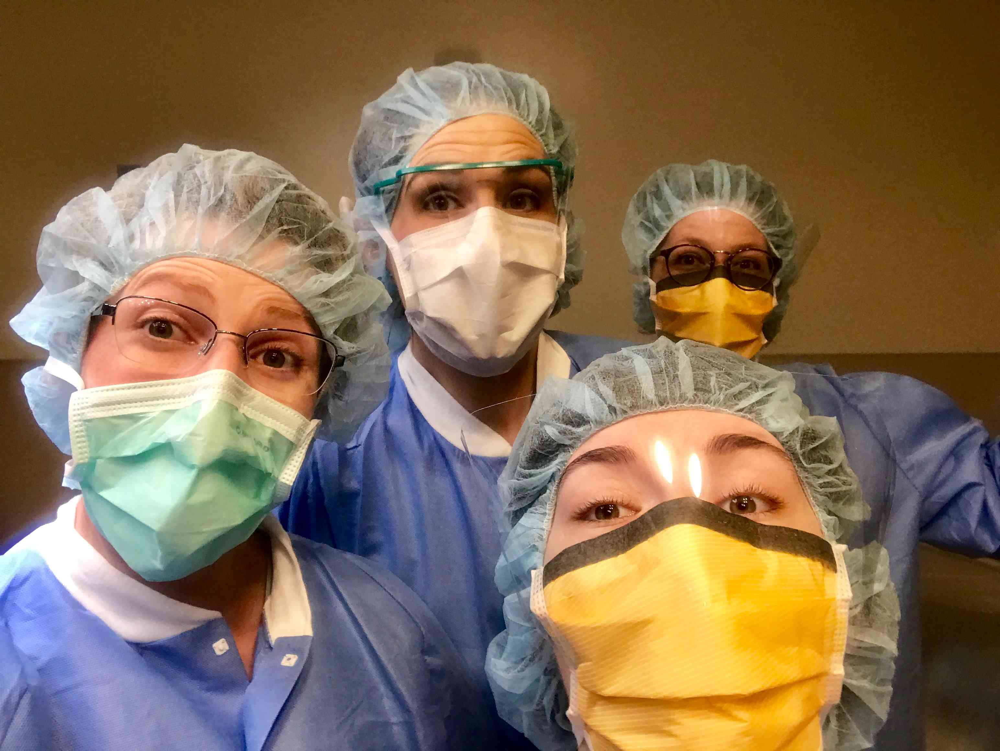

About this Instructable:
I chose this project because despite years of training, for various reason and to my shame, I have not yet signed off on heart recoveries (Signed off means I've recovered five hearts that received no error reports from the processing technicians.) I'm at 4/5 actually, so I tend to think about that elusive final heart frequently, like a hang nail!
"Wow, Kat, hearts are pretty cool. Where can I learn more?"
You want to learn more about Tissue Recovery? It's a great field in the non-profit work and you get to make a difference in people's lives! You can learn a lot from the
American Association of Tissue Banks.